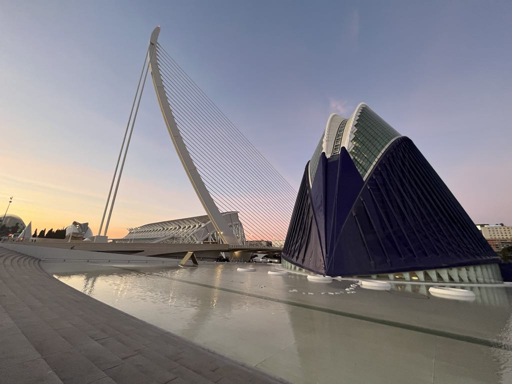
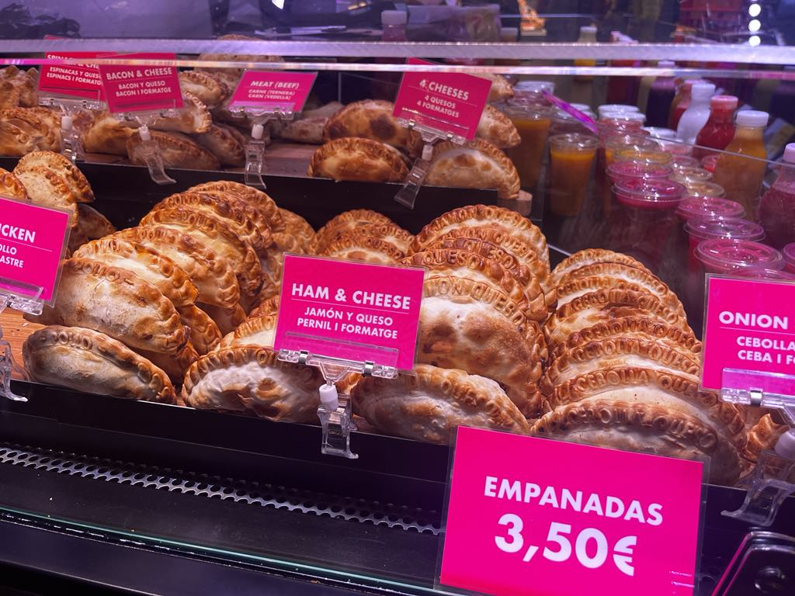

One must-see place is the City of Arts and Sciences. This modern complex includes a science museum, aquarium, IMAX cinema and more. It looks like a set from a science fiction movie!
For a relaxing walk, explore the Turia Gardens – a former riverbed turned into a long park that stretches through the city. It’s full of greenery, playgrounds, and bike paths.
The central market, Mercado Central, is a treat for the senses. You’ll find fresh produce, local delicacies, and the authentic flavors of Valencia.


For beach lovers, Malvarrosa Beach is the place to be. Soft sand, blue water, and cozy beach bars make it perfect for a sunny day.
Also visit the old town, with landmarks like Valencia Cathedral and the Silk Exchange (La Lonja). The mix of Gothic, Baroque and Romanesque styles is fascinating.
Valencia is a calm yet vibrant city full of flavors, sunshine, and Mediterranean charm.